Ray-Surface Intersections with the Newton-Raphson Algorithm
A few weeks ago I restarted work on Cherry, my sequential ray tracer, by porting the GUI from Javascript/React to pure WASM with egui. I am very happy with the results. It's much easier to add features with egui, and I have no regrets about giving up the DOM in the web application. I was never very good at web developement, and I always felt that React has too much unseen magic happening behind the scenes.
Having gotten the frontend work out of the way, I turned my attention back to adding features to Cherry. One of the applications that interests me in the lab is scan lenses, i.e. lenses that translate an angular deviation of a laser beam into a lateral displacement. These lenses are designed so that their scanning plane is as flat as possible over a large field of view. They often must work across multiple wavelengths and at large field angles.
As a starting point, I put the f-theta scan lens example from Optiland, which itself comes from Milton Laikin's Lens Design, 4th ed., into Cherry and began varying the incident field angle. It did not take long before problems in the ray tracing routine appeared.
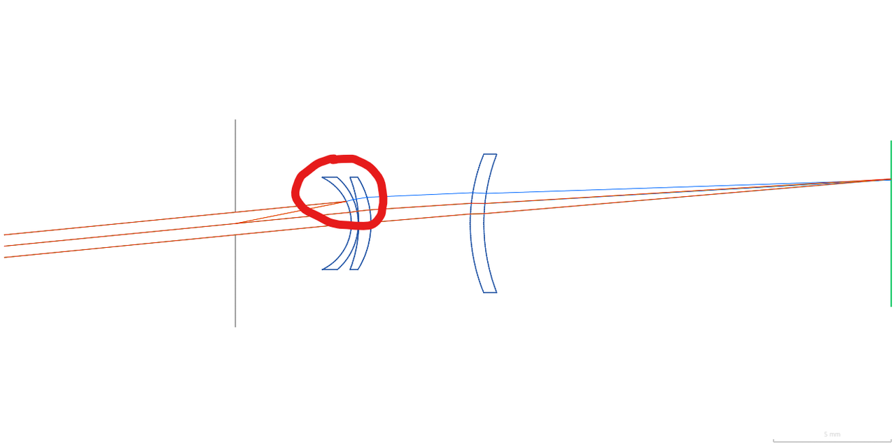
At a field angle of exactly 5.6 degrees, the marginal ray from the Fraunhofer C line ( \( \lambda = 0.6563 \, \mu m\) ) reflects backwards off the first lens surface and intersects the origin. It propagates correctly for field angles of 5.5 degrees and 5.7 degrees, which to me suggests that there is a numerical accident that happens at exactly this value. Furthermore, the spot diagram shows ray-surface intersections across all wavelengths in the image plane disappearing and reappearing randomly as the field angle increases, with the overall number of ray trace errors increasing with field angle. Small angles do not seem to have the problem, and indeed I had not yet tried examples with highly curved surfaces such as this f-theta lens.
As it turns out, the cause of this problem was a silly bug that came from code I wrote three years ago. At the time, I didn't truly and fully understand the Newton-Raphson (NR) root finding algorithm for finding ray-surface intersections. I wanted surface normal vectors to always be unit vectors by convention, and this subtlety ended up degrading and in some cases, ruining the algorithm's ability to find the intersection point, especially at large angles of incidence.
This post is a recap about my journey in debugging the issue and better understanding the NR algorithm. I hope you learn as much as I did from it.
Debugging Ray-Surface Intersections
Running Traces through Algorithms
In practice there are a lot of ray-surface intersections to compute; tracing 1000 rays through 8 surfaces, for example, yields 8000 intersections. This means the algorithm loops 8000 individual times. When only a subset of these fail, it pays to have good debugging tooling in place to identify the state of the algorithm during a failure.
For this I turned to the excellent tracing crate, which has become something of a de facto standard for logging in Rust. The primary abstractions in tracing are events and spans. Events are the most straightforward to understand because they are the same thing as log messages in other languages.
tracing's documentation provides a good, high-level explanation of spans1:
Unlike a log line that represents a moment in time, a span represents a period of time with a beginning and an end. When a program begins executing in a context or performing a unit of work, it enters that context’s span, and when it stops executing in that context, it exits the span.
The value in using spans is that you can attach data to them, forming a context. Every event that is emitted during a span is associated with this data, regardless of where the event was emitted. In pseudocode, my ray tracing algorithm roughly works like this:
for field in fields.iter(): for (surface_id, surface) in surfaces.iter().enumerate(): for (ray_id, ray) in rays.iter().enumerate(): // coordinate system transformations intersect(ray, surface) // ray transformations // coordinate system transformations
When an intersection failure occurs, I'd like to know the ray_id, but I'd also like to know the state of variables inside the intersection method. Using spans, I do not have to thread ray_id inside the intersect method to attach it to log messages. Instead, I create a span at the top of the inner-most loop that contains ray_id in its context. Then, any events inside the intersection method will be associated to that context. I can then filter by, say, ray_id=42 to see all events that happened for that ray inside intersect().
for field in fields.iter(): for (surface_id, surface) in surfaces.iter().enumerate(): for (ray_id, ray) in rays.iter().enumerate(): let _span = trace_span!("trace_ray", ray_id, surface_id).entered(); // <-- Span begins // coordinate system transformations | | intersect(ray, surface) | | // ray transformations | // coordinate system transformations | // <----------------------------------------------------------------------- Span ends
A Failing Test Case
I recreated the same lens in an integration test with a single wavelength at \( \lambda = 0.5876 \) and an off-axis tangential ray fan consisting of 9 rays and incident at 20 degrees. I simplified the test case to reduce the total number of errors, which in turn allowed me to better isolate problems. There were two notable types of errors. In the first, I saw NaNs appear in some of the values manipulated by the Newton-Raphson algorithm:
2026-03-26T07:49:32.552835Z ERROR cherry_rs::views::ray_trace_3d::rays: Ray intersection did not converge, ctr: 999, s: NaN, residual: NaN at cherry-rs/src/views/ray_trace_3d/rays.rs:97 2026-03-26T07:49:32.552896Z ERROR cherry_rs::views::ray_trace_3d::trace: Ray terminated due to intersection failure, ray_id: 8, surface_id: 2, reason: Ray intersection did not converge at cherry-rs/src/views/ray_trace_3d/trace.rs:57
In the second type of error, the ray-surface intersection simply did not converge.
2026-03-26T07:49:32.553113Z ERROR cherry_rs::views::ray_trace_3d::rays: Ray intersection did not converge, ctr: 999, s: 0.339233626291856, residual: -2.220446049250313e-16 at cherry-rs/src/views/ray_trace_3d/rays.rs:97 2026-03-26T07:49:32.553139Z ERROR cherry_rs::views::ray_trace_3d::trace: Ray terminated due to intersection failure, ray_id: 3, surface_id: 3, reason: Ray intersection did not converge at cherry-rs/src/views/ray_trace_3d/trace.rs:57
The first type of error was easy to fix. The NaN occurs because the first guess at the intersection point lies further from the axis than the surface's radius of curvature. To correct for this, I now check for NaNs and bisect the guess backwards until I am inside the domain of the surface.
The second error type was the tricky one, and I'll spend the rest of this post discussing it.
The Newton-Raphson Algorithm
At this point while debugging, I began to feel like I needed a refresher in the NR algorithm. It has been about three years since I first implemented it and quite frankly I have forgotten a lot of the details. So I'm going to circle back to the basics to better prepare myself to fix this thing.
Root Finding
The Newton-Raphson algorithm is a well-known numerical routine for finding the roots (a.k.a. zeros) of a function. I think it's best illustrated by way of example. I found one at https://atozmath.com/example/CONM/Bisection.aspx?q=nr&q1=E1 that involves finding the single zero of the function \( f(x) = x^3 - x - 1 \). The function is plotted below:
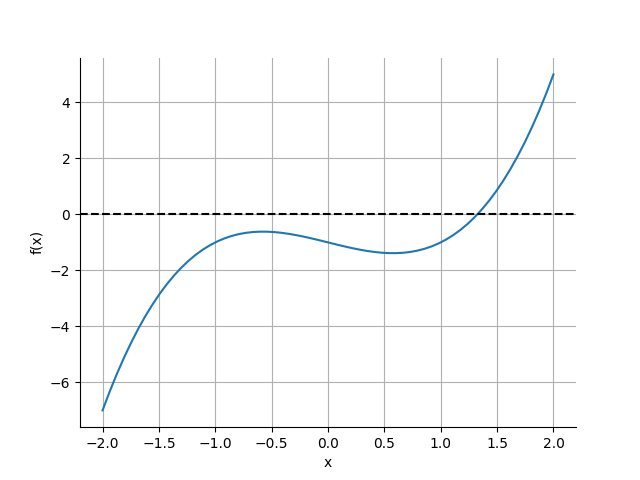
The algorithm is derived as follows: assume we want to find the root of a function \( f(x) \). Choose a starting point \( x_0 \) close to the root and find the slope of the line tangent to the curve of the function at this point. Extend this line to \( x_1 \), the x-intercept where \( y = 0 \). The expression for the slope of \( f (x) \) at \( x_0 \) is
$$ f'(x_0) = \frac{\Delta y}{ \Delta x} = \frac{f(x_0) - f(x_1)}{x_0 - x_1} = \frac{f(x_0) - 0}{x_0 - x_1}. $$
Below you can see what this construction looks like using \( x_0 = 1.5 \).
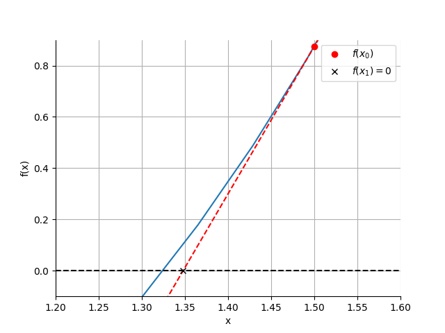
Solving this expression for \( x_ 1 \) gives
$$ x_1 = x_0 - \frac{f(x_0)}{f'(x_0)}. $$
Repeat the process using \( x_1 \) as the new starting point:
$$ x_2 = x_1 - \frac{f(x_1)}{f'(x_1)}. $$
The more you repeat the process, the closer you get to the root.
Before I Go On, Some Vocabulary
The function \( f(x) \) is often called the residual in the NR literature because it can be thought of as a distance-based error from the the value \( f(x) = 0 \).
As far as I can tell there's no standard term for \( f'(x) \). I'll refer to it as the denominator for simplicity. Once I reach the part of this post on surface representations, I will also refer to it as the surface normal because it is related to the normal vector to the lens surface.
Termination Criteria
There are two common stopping criteria for NR. In the first, you stop iterating whenever the difference between successive steps \( x_i \) and \( x_{i+1} \) is less than some tolerance. In the second, you stop when \( | f(x_n) | \) is less than some tolerance. You can also combine the two so that you stop when either is satisfied. This helps terminate the algorithm when it is converging so slowly that \( \Delta x_i \) is large even but the residual is small.
Here are the first six iterations of the algorithm for finding the root of \( f(x) = x^3 - x - 1 \) when starting at \( x_0 = 1.5 \).
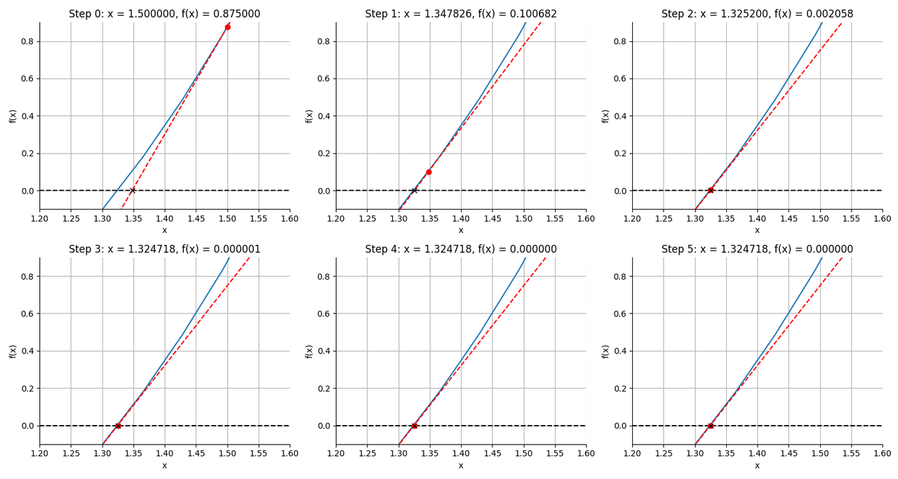
After 6 steps, the algorithm has identified the root \( x = 1.324718 \) with a precision better than \( 10^{-6} \).
Oscillations
Now of course I deliberately diverted your attention away from the important point that you need to choose the starting point such that it is already close to the root. Here's what happens when I choose a starting point close the local maximum at -0.5:
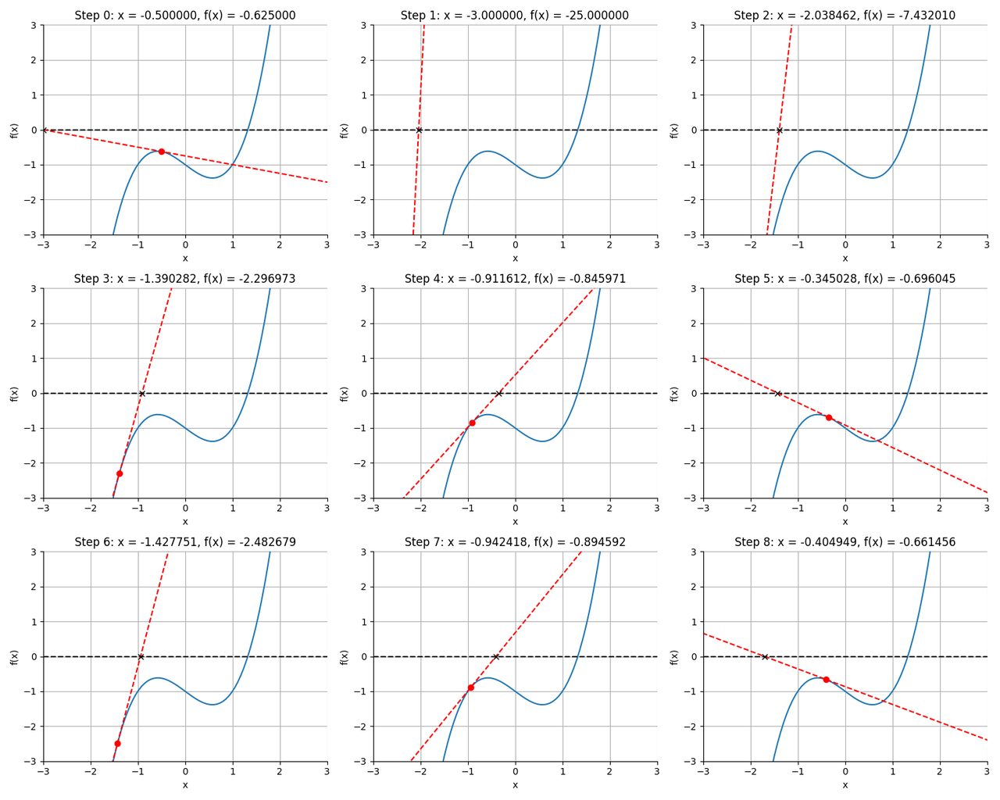
The algorithm struggles to converge because the initial tangent line is nearly horizontal. This results in the next guess being very far off target and ultimately the algorithm oscillates irregularly around the starting point. However, at step 12, it happens to land just to the right of the local minimum at \( x = 0.7425 \), which sends the next guess far to the right of all local extrema.
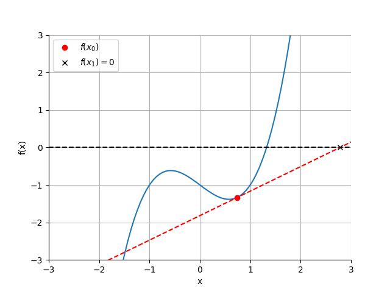
From this point, the algorithm can simply descend downhill, where by step 19 it has found the root with a tolerance better than \( 10^{-6} \).
Convergence Guarantees
If the starting point is close to the root, the Newton-Raphson algorithm has quadratic convergence. This means that the error \( \epsilon_{i+1} \) in step \( i + 1 \) is proportional to the square of the error at the previous step, \( \epsilon_i^2 \). But if the starting point is not sufficiently close, then the algorithm can display quite erratic behavior and the assumptions that led to the conclusion about quadratic convergence are no longer valid.
The Importance of the Magnitude of \( f'(x) \)
The preceding discussion demonstrates that the choice of starting point is of great importance. Is there some way to identify a good or bad starting point?
The above figure shows that when the slope of the tangent line is small, the next guess is relatively far away from the current position. Oscillations are more likely to occur when this happens, especially when local extrema are between the trial position and the root.
Conversely, when the slope of the tangent line is large, the next guess is relatively close to the current position. This is what happened with an initial guess of 1.5 as seen here.
We can see this behavior by rewriting the equation for the next guess \( i + 1 \) as:
$$\begin{eqnarray} x_{i+1} &=& x_i - \frac{f(x)}{f'(x)} \\ x_{i+1} - x_i &=& - \frac{f(x)}{f'(x)} \\ \Delta x_i &=& - \frac{f(x)}{f'(x)} \end{eqnarray}$$
So two quantities determine the magnitude of the step. Large step sizes occur when:
- the residual function \( f(x) \) is large, and
- the magnitude of \( f'(x) \) is small.
The magnitude of \( f'(x) \) is therefore an indicator of the likelihood of convergence problems. In the extreme case of \( f'(x) = 0 \), the NR algorithm will never converge because of a division by zero in the above equation.
Ray-Surface Intersections
The central problem in ray tracers is to find the 3D intersection of a ray with a surface. The problem has analytical solutions when the surface is planar or spherical, though care must be taken to avoid numerical artifacts such as catastrophic cancellation in their solutions2.
When a surface is not flat or spherical, however, we turn to numerical routines such as NR. One early paper describing the approach was from Spencer and Murty in 1962. Spencer and Murty were particularly interested in tracing rays through systems containing general surface shapes like conic section surfaces, aspheres, cylinders, and toroids. They were also interested in an algorithm that would easily accommodate new surface types.
Ray Parameterization
Regardless of whether you use an analytical or numerical solution, you usually approach the problem by first expressing ray propagation in parametric form. I illustrate this construction below:
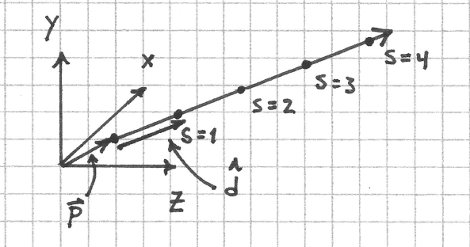
A ray is defined by two, 3D vectors \( \vec{p} \) and \( \hat{d} \). The position vector \( \vec{p} \) points to any point on the ray. \( \hat{d} \) is a vector of unit magnitude whose elements are the direction cosines of the ray. The parameter \( s \) denotes the distance along the ray from the point \( \vec{p} \) so that the set of all points on the ray is expressed as
$$ \vec{r}(s) = \vec{p} + s \hat{d}. $$
When \( s = 0 \), we are at the point \( \vec{p} \) on the ray. Increasing \( s \) moves us in the direction of the ray; decreasing it moves in the opposite direction.
Surface Representations
An implicit representation of a surface in 3D is
$$ F ( x, y, z) = 0. $$
Seen this way, a surface is the zero level set of a 3D scalar function.
A more useful representation for optical design is to place a single vertex or point of the surface at the origin and let the \( z \) axis represent the optical axis. Let the so-called surface sag, or \( sag(x, y) \), represent the distance from the \( z = 0 \) plane to the surface for all points \( x, y \) within the aperture of the surface3.
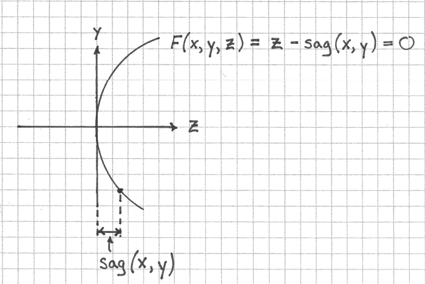
We can now rewrite \( F \) as
$$ F(x, y, z) = z - \text{sag}(x, y) = 0 $$.
Saggita for Rotationally Symmetric Conic Section Surfaces
The most common surface types used in optical design are
- flat surfaces, and
- rotationally symmetric conic section surfaces, also known as quadrics of rotation.
The surface sag of a flat surface is zero everywhere in the local coordinate system of the surface, which by my definition is the \( z=0 \) plane.
A conic section surface is a surface whose intersection with a plane is a conic section curve, i.e. a circle, parabola, hyperbola, or ellipse. The surface sag of a rotationally symmetric conic section surface with a vertex at the origin and oriented along the \( z \) direction is
$$ \text{sag}(r) = \frac{r^2 C}{1 + \sqrt{1 - (1 + K) C^2 r^2}} $$
where \( r = \sqrt{x^2 + y^2} \) is the radial distance from the origin and \( C \) is the curvature of the surface4. It is expressed in terms of curvature and not radius of curvature \( R \) to avoid numeric difficulties with flat surfaces where \( R = \pm \infty \).
The conic constant \( K \) determines the conic's type. The types are defined by:
- Hyperbola : \( K < -1 \)
- Parabola : \( K = -1 \)
- Ellipse : \( K > -1 \)
- Circle (special case of an ellipse): \( K = 0 \)
The implicit surface representation for a conic section surface is
$$ F (x, y, z) = z - \frac{r^2 C}{1 + \sqrt{1 - (1 + K) C^2 r^2}} = 0 $$.
Partial Derivatives of Rotationally Symmetric Conic Section Surfaces
The last bit of information that I need to calculate ray intersections with conic section surfaces are their partial derivatives. I got these by hand by computing them in polar coordinates and converting them back to Cartesian coordinates using the chain rule. The results are
$$\begin{eqnarray} \frac{\partial F}{ \partial x} &=& \frac{-x C}{\sqrt{1 - (1 + K) C^2 (x^2 + y^2)}} \\ \frac{\partial F}{ \partial y} &=& \frac{-y C}{\sqrt{1 - (1 + K) C^2 (x^2 + y^2)}} \\ \frac{\partial F}{ \partial z} &=& 1 \end{eqnarray}$$
Newton-Raphson for Ray-Surface Intersections
The NR algorithm for computing ray intersections with general surfaces is
$$s_{i+1} = s_i - \frac{F(x,y,z)}{\nabla F (x, y, z) \cdot \hat{d}}.$$
I think most notable is that the denominator has been replaced with the directional derivative of the surface's equation along the direction of the ray's propagation. Another thing worth noting is that \(x\), \(y\), and \(z\) are constrained to lie on the ray by writing \(x = p_x + sl \) and so on for the other two quantities5.
At this point I'm at last able to understand where problems in the Newton-Raphson algorithm for ray tracing arise. Remember that oscillations and non-convergence often occur when the derivative of the residual is small or there are local extrema between the starting point and the actual root. In ray tracing, the derivative is expressed as \( \nabla F (x, y, z) \cdot \hat{d} \). This can become small when:
- A ray is traveling nearly parallel to the surface at a point \( x, y \).
- The gradient of \( F \) is small.
Geometrical Interpretation of Newton-Raphson Failures
I think the small gradient of \( F \) is more easily understood geometrically. To see this, consider that the \( \nabla F \) is parallel to the surface normal vector at all points on the surface. I can write this as a product of the magnitude of the normal vector and a unit vector pointing in its direction:
$$ \nabla F = |\eta| \hat{\eta}. $$
Now the denominator in the NR update equation is the dot product of the above expression with the direction of the ray, or \( |\eta| \hat{d} \cdot \hat{\eta} \). But both \( \hat{d} \) and \( \hat{\eta} \) are unit vectors, so I can replace their dot product with the cosine of the angle \( \alpha \) between them:
$$ \nabla F \cdot \hat{d} = |\eta| \cos \alpha. $$
So the directional derivative becomes small for large angles of incidence and small normal vectors.
Normal Vectors and Surface Representations
There are two parts of the gradient that can make the denominator in the Newton-Raphson update equation small:
- The magnitude of the normal vector \( | \eta |\)
- The angle between the ray direction cosine vector and the unit normal vector \(\hat{d} \cdot \hat{\eta} = \cos \alpha \)
To get a sense of the magnitude of the normal vector, consider the plot of the gradient of \( F \) as a function of radial distance from the vertex of the curved surface of a \(f = 50 \, mm\), 1" diameter, spherical, convexplano lens. The radius of curvature of this surface is 25.8 mm.
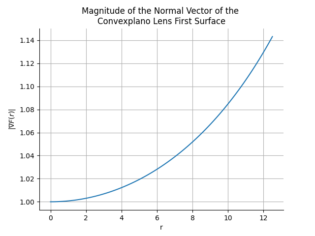
Compare this to the same plot but for the first surface of the scan lens from the beginning of this post, whose radius of curvature is -2.2136 mm.
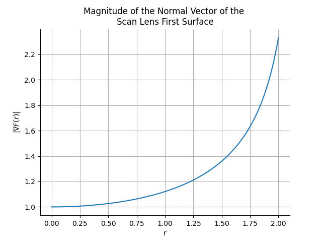
In neither case is the gradient very small, and we are in some sense rescued by the fact that \( \frac{\partial F}{\partial x} \) is 1 everywhere.
But wait. Shouldn't the normal vector of a spherical surface be a vector of constant magnitude and perpendicular to the surface everywhere? I expected this:
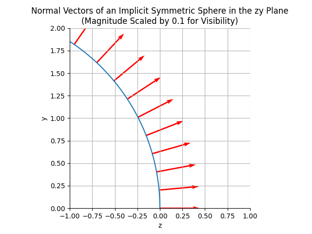
But got this:
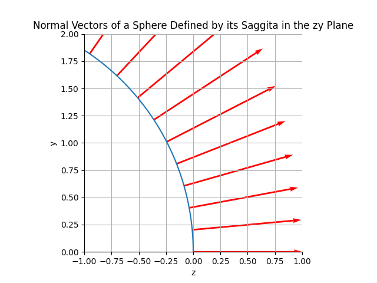
So the magnitude of the normal vector varies with distance from the z-axis6. And though it's hard to see in these plots, the "normal vectors" are not normal to the surface except at \( x = y = 0 \)!
I was really disturbed by this at first. As it turns out, this is due to representing the surface by its sag, which is effectively a height field above the xy plane. If instead I had used the sphere's symmetric implicit form \(F_s = x^2 + y^2 + (z - R)^2 - R^2 = 0 \) then I would have obtained a normal vector whose magnitude was constant everywhere on the sphere. This is because
$$\begin{eqnarray} \frac{\partial F_s}{ \partial x} &=& 2x \\ \frac{\partial F_s}{ \partial y} &=& 2y \\ \frac{\partial F_s}{ \partial z} &=& 2(z - R). \end{eqnarray}$$
In other words, representing the sphere as a height field has the effect of breaking spherical symmetry with respect to its normal vector7.
All of this aside, the magnitude of the normal vector doesn't really become that large in the scan lens example, so the cause of the Newton-Raphson failure is likely coming from near-grazing incidence rays where \(\cos \alpha \approx 0 \).
Back to Debugging
At this point I wanted to confirm that the problematic rays were at near-grazing incidences, so I turned back to the code. Here is a trace of the first five NR iterations of one particular ray that fails to converge at the first surface of the lens:
2026-04-09T07:25:02.768031Z TRACE cherry_rs::views::ray_trace_3d::rays: intersect_init, pos_x: 3.0616169978683836e-17, pos_y: 0.5, pos_z: -5.0, dir_l: 2.094269368838496e-17, dir_m: 0.3420201433256687, dir_n: 0.9396926207859084, s_init: 5.320888862379561 at cherry-rs/src/views/ray_trace_3d/rays.rs:69 in cherry_rs::views::ray_trace_3d::rays::intersect in cherry_rs::views::ray_trace_3d::trace::trace_ray with ray_id: 8, surface_id: 2 2026-04-09T07:25:02.768093Z TRACE cherry_rs::views::ray_trace_3d::rays: newton-raphson iteration data, ctr: 0, s: 4.775443550511577, s_1: 0.0, p_x: 8.633304277606096e-17, p_y: 1.4099255856655057, p_z: -2.5, sag: -0.5071021819862234, residual: -1.9928978180137766, denom: 0.94226 88642314074 at cherry-rs/src/views/ray_trace_3d/rays.rs:125 in cherry_rs::views::ray_trace_3d::rays::intersect in cherry_rs::views::ray_trace_3d::trace::trace_ray with ray_id: 8, surface_id: 2 2026-04-09T07:25:02.768118Z TRACE cherry_rs::views::ray_trace_3d::rays: newton-raphson iteration data, ctr: 1, s: 2.8626356840250526, s_1: 4.775443550511577, p_x: 1.306268214832213e-16, p_y: 2.1332978875896096, p_z: -0.5125509346046124, sag: -1.6227826993006131, residual: 1.110 2317646960007, denom: 0.5804199073769454 at cherry-rs/src/views/ray_trace_3d/rays.rs:125 in cherry_rs::views::ray_trace_3d::rays::intersect in cherry_rs::views::ray_trace_3d::trace::trace_ray with ray_id: 8, surface_id: 2 2026-04-09T07:25:02.768148Z TRACE cherry_rs::views::ray_trace_3d::rays: newton-raphson iteration data, ctr: 2, s: 4.7418998688939, s_1: 2.8626356840250526, p_x: 9.056747225066086e-17, p_y: 1.479079066939422, p_z: -2.3100023717232365, sag: -0.5666786072973584, residual: -1.74332 3764425878, denom: 0.9276629536509492 at cherry-rs/src/views/ray_trace_3d/rays.rs:125 in cherry_rs::views::ray_trace_3d::rays::intersect in cherry_rs::views::ray_trace_3d::trace::trace_ray with ray_id: 8, surface_id: 2 2026-04-09T07:25:02.768181Z TRACE cherry_rs::views::ray_trace_3d::rays: newton-raphson iteration data, ctr: 3, s: 2.997895475725084, s_1: 4.7418998688939, p_x: 1.299243264339216e-16, p_y: 2.1218252727950615, p_z: -0.5440716846947353, sag: -1.5828207424715346, residual: 1.038749 0577767993, denom: 0.5956114914879407 at cherry-rs/src/views/ray_trace_3d/rays.rs:125 in cherry_rs::views::ray_trace_3d::rays::intersect in cherry_rs::views::ray_trace_3d::trace::trace_ray with ray_id: 8, surface_id: 2 2026-04-09T07:25:02.768222Z TRACE cherry_rs::views::ray_trace_3d::rays: newton-raphson iteration data, ctr: 4, s: 4.714415826981489, s_1: 2.997895475725084, p_x: 9.340017663658938e-17, p_y: 1.525340640282867, p_z: -2.182899743573678, sag: -0.6094301551576737, residual: -1.57346 95884160044, denom: 0.9166623554823017 at cherry-rs/src/views/ray_trace_3d/rays.rs:125 in cherry_rs::views::ray_trace_3d::rays::intersect in cherry_rs::views::ray_trace_3d::trace::trace_ray with ray_id: 8, surface_id: 2
In table form:
| ctr | s (after step) | residual | denominator |
|---|---|---|---|
| 0 | 4.775 | -1.993 | 0.942 |
| 1 | 2.863 | 1.110 | 0.580 |
| 2 | 4.742 | -1.743 | 0.928 |
| 3 | 2.998 | 1.039 | 0.596 |
| 4 | 4.714 | -1.573 | 0.917 |
The denominator is not anywhere near small enough to indicate that the problem is caused by near-grazing incidence angles, so there must be something else going on.
The first thing to note is that the residual \(z - \text{sag} (x, y) \) is oscillating in sign which indicates that the algorithm is hopping back and forth between different sides of the surface. The root estimate s appears to slowly be converging to some value but hasn't yet done so. In fact, it took 100,000 iterations to converge to within 0.0004 of the root, which was somewhere around s=4.14. This rate of convergence is much too slow. What could be causing it?
I plotted the residual function and it didn't seem too bad:
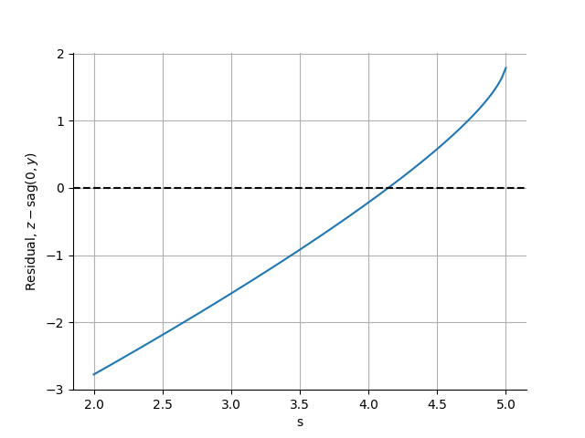
I then plotted the NR steps for this particular ray and found that I could not reproduce the oscillations. In fact, NR converged quite rapidly.
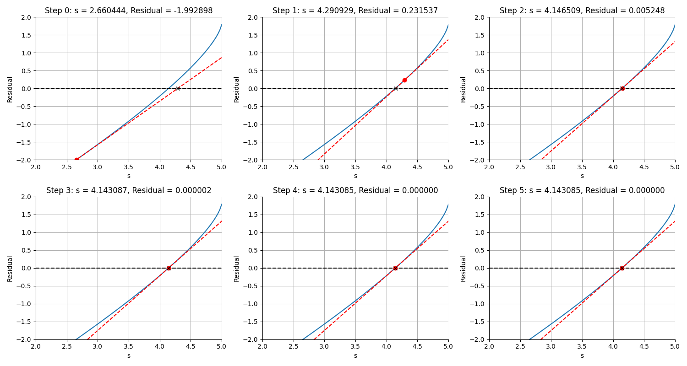
So my two different implementations did not agree. After about 2 hours of digging I found the problem: I was normalizing the normal vector to 1 in the Rust code rather than retaining its magnitude.
// 💣💣💣 let norm = Vec3::new(dfdx, dfdy, dfdz).normalize(); // 💣💣💣
This has a subtle effect on the value of the NR denominator such that the step size isn't quite what it should be.
I can't begin to explain to you how subtle this bug was. I nearly face-palmed by head off when I found it. It was in code that I wrote nearly three years ago. Smart people can do really dumb things with computers.
Discussion
I am actually quite happy to have had to solve this bug even if there was no deeper, numerical reason behind it. It forced me to do a deep dive into the Newton-Raphson algorithm and I feel much more knowledgable as a result. Still, it's frustrating because I clearly was experimenting in the early days, and I wonder whether some other careless coding choices still await to be discovered.
I only briefly mentioned it, but in this journey I also implemented a fallback to a bisection method when the initial NR guess fails due to a negative discriminant in the sag function of a conic section surface. I think this is a win because rays that would have initially failed can be recovered by the fallback routine. But what's more, both of these changes led to some impressive improvements in the benchmark tests: the convexplano lens example runs 43% faster because of faster NR convergence and fewer early ray terminations.
Out of curiosity I looked into what Optiland does to compute Ray-Surface intersections. I believe that it analytically computes intersections for flat and spherical surfaces and falls back to NR when things get more complicated. I use NR for everything, and to be honest, I'm happy with this approach so far. The ray-surface interection function in my ray tracer is a single long function, but it reads linearly and is very clear about what it does. If I were to add if/else branches to check for surface types (or, more properly, employ polymorphism to make the intersection logic a Surface-level method), then the logic would diffuse throughout the codebase. An essay by John Carmack on inlining code that I read a couple years ago had a profound effect on me when it comes to mission-critical, high performance sections of code. Ray-surface intersection logic is one such example where "good" software engineering practices are counter-productive, and just inlining the whole damn thing makes a lot of sense.
The real lesson here is that it always pays to really understand what your algorithms are doing, and having the proper tooling in place for debugging pays off enormously.
Happy ray tracing.
-
Spans remind me a lot of Sentry, which I used to perform tracing on distributed code bases when I worked for a photogrammetry company doing image processing on the Cloud. ↩
-
See for example Chapter 7 of Ray Tracing Gems. ↩
-
When I first learned this term, I thought the name came from the idea that the surface "sags" away from the \(z=0\) plane. As it turns out, it's short for sagitta, the Latin word for arrow. ↩
-
Surface curvature is related to the radius of curvature \( R \) as \(C = 1 / R \). ↩
-
\(l^2 + m^2 + n^2 = 1 \) are the direction cosines of the ray. ↩
-
I don't show this, but for a lens with positive curvature, the normal vectors point to the left in these plots for the symmetric implicit representation. In other words, it always points outwards from the sphere's center in the symmetric implicit representation, but in the +z direction in the saggital representation. ↩
-
There is a name for this height field representation in the theory of surfaces; it's called the Monge patch. ↩
Comments
Comments powered by Disqus